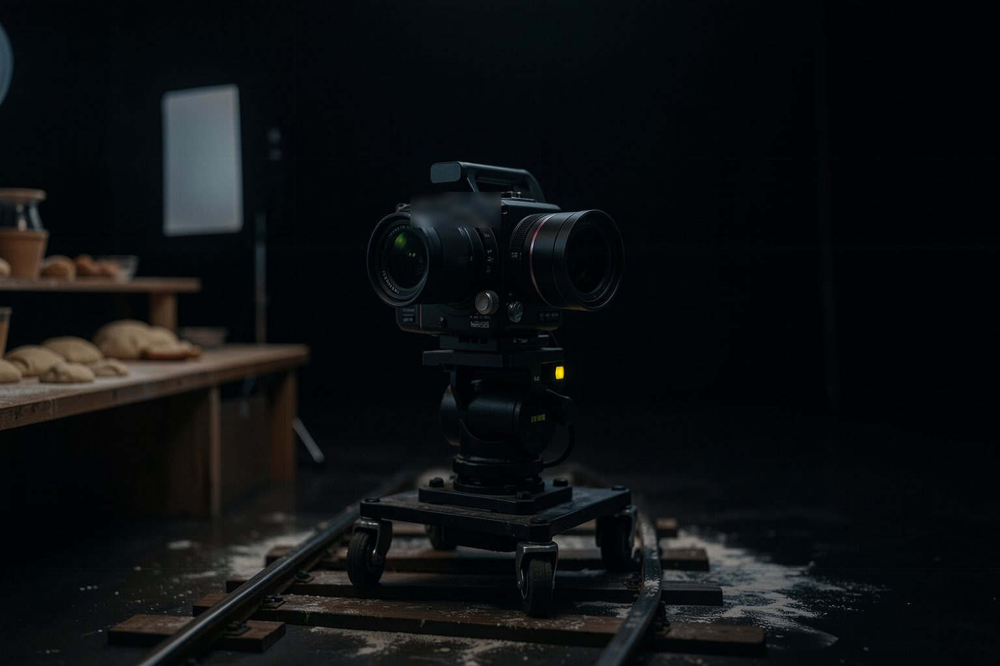

Formação Cinema com IA · curso 1 de 6 · 8 aulas
Geração: do storyboard ao clipe com os geradores de out/2026
Qual gerador usar em cada plano, como escrever o prompt com som, por que a imagem-chave vem antes do vídeo e como segurar o mesmo personagem entre planos. Cada aula termina num arquivo ou num clipe que a própria página confere. Gerar é com a ferramenta que você tiver, paga ou aberta.
- 8aulas
- 8entregas conferidas na página
- 0crédito gasto pelo curso
- 7geradores na tabela de 19/10/2026 (+ o caso Sora)
As aulas
A cena do curso 0 continua: "A primeira fornada". Aqui o storyboard da Dona Lia vira stills, clipes e uma lista de prompts; você faz o mesmo com o seu.
 Aula 1 · 18 minO mapa dos geradores em out/2026 e como escolherGerador de vídeo muda de versão a cada poucos meses e às vezes some, como o Sora. Por isso a escolha não começa pelo ranking: começa pelo que o seu plano pede. Duração, fala, referência e licença decidem; a tabela datada só mostra quem atende hoje.
Aula 1 · 18 minO mapa dos geradores em out/2026 e como escolherGerador de vídeo muda de versão a cada poucos meses e às vezes some, como o Sora. Por isso a escolha não começa pelo ranking: começa pelo que o seu plano pede. Duração, fala, referência e licença decidem; a tabela datada só mostra quem atende hoje. Aula 2 · 17 minAnatomia do prompt de vídeo: sujeito, ação, câmera, luz e somPrompt de vídeo é a linha da decupagem escrita para a máquina. Quem é, o que faz, onde, como a câmera vê, que luz e o que se ouve. Desde que o som passou a sair junto com a imagem, ele também entra no prompt, em frase separada.
Aula 2 · 17 minAnatomia do prompt de vídeo: sujeito, ação, câmera, luz e somPrompt de vídeo é a linha da decupagem escrita para a máquina. Quem é, o que faz, onde, como a câmera vê, que luz e o que se ouve. Desde que o som passou a sair junto com a imagem, ele também entra no prompt, em frase separada. Aula 3 · 18 minImagem-chave primeiro: still cinematográfico e lookbookAntes de animar, acerte a foto. Uma imagem sai em segundos, então você testa o look várias vezes e só leva para o vídeo o quadro aprovado. O lookbook guarda a receita desse look num prompt-base que entra igual em todos os stills da cena.
Aula 3 · 18 minImagem-chave primeiro: still cinematográfico e lookbookAntes de animar, acerte a foto. Uma imagem sai em segundos, então você testa o look várias vezes e só leva para o vídeo o quadro aprovado. O lookbook guarda a receita desse look num prompt-base que entra igual em todos os stills da cena.
Aula 4 · 19 minDa imagem ao movimento: imagem-para-vídeo e primeiro/último quadroCom o still aprovado, o gerador já sabe quem, onde e com que luz. O prompt agora só diz o que muda: o movimento da câmera, a ação e o som. Com primeiro e último quadro, você também decide onde o plano termina. E antes de seguir, a página confere o clipe. Aula 5 · 18 minConsistência por referência: personagem, objeto e estilo entre planosUm dos erros mais visíveis em vídeo com IA é o personagem que muda de rosto entre um plano e outro. Os geradores de 2026 aceitam imagens de referência, cada um com um nome e um limite. O método é o mesmo em todos: imagem de referência, descrição travada, look fixo e último quadro herdado.
Aula 5 · 18 minConsistência por referência: personagem, objeto e estilo entre planosUm dos erros mais visíveis em vídeo com IA é o personagem que muda de rosto entre um plano e outro. Os geradores de 2026 aceitam imagens de referência, cada um com um nome e um limite. O método é o mesmo em todos: imagem de referência, descrição travada, look fixo e último quadro herdado. Aula 6 · 17 minVários planos e falas numa geração: multishot e diálogoEm 2026, alguns geradores fazem vários planos com cortes numa única geração, mantendo personagem e luz, e já põem a fala na boca de quem fala. Isso economiza emendas, mas cobra um roteiro mais preciso: planos numerados, quem diz o quê e quanto dura cada um.
Aula 6 · 17 minVários planos e falas numa geração: multishot e diálogoEm 2026, alguns geradores fazem vários planos com cortes numa única geração, mantendo personagem e luz, e já põem a fala na boca de quem fala. Isso economiza emendas, mas cobra um roteiro mais preciso: planos numerados, quem diz o quê e quanto dura cada um. Aula 7 · 18 minO caminho aberto: ComfyUI com LTX e Wan 2.2, VRAM e licençaModelo aberto roda na sua máquina, sem crédito por geração e sem depender de uma plataforma ficar no ar. Em troca, pede placa de vídeo com memória, disco livre e leitura da licença. Esta aula ajuda a decidir se a sua máquina roda e qual modelo e template usar no ComfyUI.
Aula 7 · 18 minO caminho aberto: ComfyUI com LTX e Wan 2.2, VRAM e licençaModelo aberto roda na sua máquina, sem crédito por geração e sem depender de uma plataforma ficar no ar. Em troca, pede placa de vídeo com memória, disco livre e leitura da licença. Esta aula ajuda a decidir se a sua máquina roda e qual modelo e template usar no ComfyUI. Aula 8 · 20 minSeu gerador de prompts: do storyboard à lista de prompts com um agenteEscrever oito prompts à mão, com o mesmo look e a mesma trava, cansa e abre espaço para erro. Um assistente de IA com regras claras faz o rascunho da lista inteira a partir do storyboard do curso 0. Você revisa, a página confere, e a lista vai para qualquer gerador.
Aula 8 · 20 minSeu gerador de prompts: do storyboard à lista de prompts com um agenteEscrever oito prompts à mão, com o mesmo look e a mesma trava, cansa e abre espaço para erro. Um assistente de IA com regras claras faz o rascunho da lista inteira a partir do storyboard do curso 0. Você revisa, a página confere, e a lista vai para qualquer gerador.
Para quem é
- 1Quem fez o curso 0 (Direção) ou já gera imagem com IA.
- 2Criadores, professores e quem faz vídeo para empresa.
- 3Quem não usa terminal: tudo se faz no navegador; a aula 7 usa o ComfyUI, que tem janela.
O que você sai fazendo
- 1Escolher o gerador pelo que o plano pede, com a data da escolha.
- 2Escrever prompt de vídeo com câmera, luz, som e fala.
- 3Gerar a imagem-chave antes e animar a partir dela.
- 4Levar a lista de prompts da sua cena para qualquer gerador.
A formação (6 cursos)
- 10 · Direção
- 21 · Geração (este curso)
- 32 · Produção: do roteiro ao filme pronto
- 43 · Motion por código com agente
- 54 · A fábrica de vídeo com agentes
- 65 · Sites cinematográficos